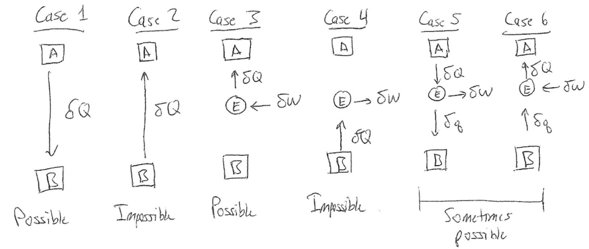

Heat Engines and Possible Processes#
Recommended textbooks#
Tester and Modell, Ch. 4.1 - 4.3.
Topics in this lecture#
Direction of heat transfer
Case studies
Heat engine efficiency
Direction of heat transfer#
In the previous lecture, we introduced the four postulates that will guide our study of thermodynamics, and furthermore discussed the first law of thermodynamics as derived from Postulate 3. Having defined the four postulates, we can now think about some of the consequences of these definitions and examine situations in which postulates would be violated. For this discussion, it’s helpful to remember the postulates which we paraphrase here from Lecture 16:
Postulate 1: Thermodynamic systems are in stable equilibrium states that can be completely characterized by two independently variable properties and the masses of system components.
Postulate 2: In processes for which there is no net effect on the environment, systems evolve toward a single stable equilibrium state.
Postulate 3: Any two equilibrium states are connected by at least one adiabatic process which uniquely determines the change in energy between these two states.
Postulate 4: If the sets of systems \(A\), \(B\) and \(A\), \(C\) each have no heat interaction when connected across diathermal walls, then there will be no heat interaction if systems \(B\) and \(C\) are also so connected.
Let us first show that we can use Postulate 4 to understand the directionality of heat transfer. Assume we have 3 systems, labeled \(A, B, C\), with \(A\) connected to \(B\) and \(B\) connected to \(C\) as defined in the postulate. Based on Postulate 4, we define a quantity, the temperature, which is a state function that is equal for two systems that are connected by diathermal walls but do not undergo heat interactions. We will assume that the temperature of \(A\), \(T_A\), is greater than \(T_B\), and heat interactions are defined such that \(\underline{Q}_{A \rightarrow B} > 0\) and \(\underline{Q}_{B \rightarrow C} > 0\). Since heat can flow from \(A\rightarrow B\) and from \(B\rightarrow C\), this also then implies that there is a heat interaction between \(A\) and \(C\). We will show that this requires \(T_C < T_B\).
If \(T_B\) equals \(T_C\), then we infer from Postulate 4 that there is no heat interaction between \(B\) and \(C\), which contradicts the system description that \(\underline{Q}_{B \rightarrow C} > 0\). If we were to allow the systems to interact such that \(\underline{Q}_{A \rightarrow B} = \underline{Q}_{B \rightarrow C}\) and \(T_B\) is fixed, then there would be a heat interaction between \(A\) and \(C\); but if \(T_C > T_B\) then it would be possible for \(T_A = T_C\), in which case there would be no heat interaction between \(A\) and \(C\) which again contradicts the system description. Thus, \(T_C < T_B < T_A\) is established by the flow of heat in this system.
 {width=”70%”}
{width=”70%”}
We have now shown that heat transfers from a high temperature system to a low temperature system. Moreover, we can state that an increase in energy increases the temperature of the system - that is, \(dU/dT > 0\). This result follows from Postulate 2. If we had a system where heat transferred from a low-temperature system to a high-temperature system, and a decrease in energy decreases the temperature of the system, then heat flow would continue indefinitely and Postulate 2 could not be satisfied. We therefore require that \(dU/dT > 0\), and will follow similar logic below.
Generalized First Law#
Before moving on, let us consider an application of the First Law of the Thermodynamics to an open system that is able to exchange energy and particles with the surroundings. First, we can recall the First Law for a closed system:
The second line is the differential form of the first law for a closed system; note that we should be careful to distinguish between the differential work and differential heat, both of which are dependent on the exact process under study (for example, \(d\underline{Q} = 0\) for any adiabatic process), while \(d\underline{U}\) is dependent only on the two states connected by the process of interest. Recall that the First Law emerged from the definition of Postulate 3, where we defined the change in energy between two states as the work done along an adiabatic path.
 {width=”70%”}
{width=”70%”}
Now let us consider an open system, such that some number of molecules can traverse the walls of the system. The system is enclosed by a surface that we will call the \(\sigma\)-surface, which is movable and diathermal so that there can be work and heat interactions. Part of the surface is also permeable. In a time \(\delta t\) we will assume that a number of molecules \(\delta N_\textrm{in}\) are pushed into the system by an external piston, with an intensive energy of \(U_\textrm{in}\) associated with each molecule (i.e. due to internal energy modes, such as translation or vibration). We will define the system as the region bounded by the \(\sigma\)-surface and the number of molecules \(\delta N_\textrm{in}\) added during this time interval. The external pressure that forces the material into the system is \(P_\textrm{in}\) and the intensive volume per molecule is \(V_\textrm{in}\), which together means work equal to \(P_\textrm{in} V_\textrm{in} \delta N_\textrm{in}\) is done on the system to add the material to the volume bounded by the \(\sigma\)-surface. There can also be additional work and heat interactions with the system during this time interval given by \(\delta \underline{W}_\sigma\) and \(\delta \underline{Q}_\sigma\). Since our definition of the system includes a simple open system and the added material, the composite system is now closed and we can apply the First Law:
Here, we define \(\underline{U}_2\) as the energy of the gas within the region bounded by the \(\sigma\) surface at the end of the process, including the new gas that has been pumped in. \(\underline{U}_1\) is the energy of the gas enclosed within the region bounded by the \(\sigma\) surface at the start of the process, while \(U_\textrm{in}\delta N_\textrm{in}\) is the energy of the incoming gas. This expression leads to the definition of a new quantity, the enthalpy, as:
\(H_\textrm{in}\) is the intensive enthalpy associated with the gas being pumped in. Note that the sign on \(P_\textrm{in} V_\textrm{in} \delta N_\textrm{in}\) is positive because we are adding energy to the system. This expression then effectively says that the First Law for an open system is adjusted to account for the enthalpy change associated with the change in the components of the system. We can generalize this result to multiple components that can simultaneously enter and leave the system and write it in differential form (we will not derive this, but it is straightforward to do so):
This is the generalized, differential form of the first law for a multicomponent open system.
Case studies of postulates#
Let us now consider a series of possible processes and, following similar logic used to determine the directionality of heat transfer, determine whether each process is possible according to the four postulates. This approach will lead to a discussion of the Second Law of Thermodynamics. In some cases, we will discuss the behavior of a heat engine, or a closed device that undergoes heat interactions with one or more systems and work interactions with a work reservoir (that is part of the environment) but is always returned to the same state as it was prior to the interactions - that is, it only performs cyclic processes. A work reservoir operates adiabatically and quasi-statically and is used for storing energy. In each of these cases, we assume that there are two systems, \(A\) and \(B\), with corresponding temperatures \(T_A > T_B\). Finally, recall that we inferred that \(dU/dT > 0\) due to the postulates - that is, increasing the energy of a system (via a heat transfer, for example) necessarily increases its temperature and vice versa. Now let us consider six cases and determine if they are possible or not according to the postulates:
{width=”100%”}
Case 1: Heat transfers from system \(A\) to system \(B\). This behavior does not appear to violate any of the postulates since over sufficient time the temperature of system \(A\) will decrease, the temperature of system \(B\) will increase, and eventually an equilibrium will be reached at which \(T_A = T_B\).
Case 2: Heat transfers from system \(B\) to system \(A\). This behavior violates Postulate 2, namely that there is an equilibrium state reached in the long-time limit - in this case, there is no convergence to a final state since the temperature would continue to change for both systems as the temperature of \(B\) decreases and the temperature of \(A\) increases.
Case 3: Work is done on a heat engine by the work reservoir, and the heat engine then transfers heat into system \(A\). This behavior does not appear to violate any postulates, regardless of whether heat transfers between \(A\) or \(B\) (the direction was chosen somewhat arbitrarily). Because the work reservoir is part of the environment, transferring energy from the work reservoir to either system via the reservoir does not violate Postulate 2 since there is a net effect on the environment. We conclude that work can be done on an engine by the environment and completely transferred as heat into a system
Case 4: Heat is transferred from system \(B\) to the heat engine and all of this energy appears as work in the reservoir, decreasing the temperature of \(B\). This process violates Postulate 2. If this process can occur, then the work produced by transferring heat from system \(B\) to the work reservoir could be injected back into the heat engine via the process described in Case 3, indirectly leading to a heat transfer into \(A\). The two combined processes thus lead to a heat transfer from \(B\) to \(A\) according to the First Law - but this is exactly the same as the process in Case 2, and hence violates Postulate 2. By extension, any cyclic process that transfers energy from a system and converts all of the transferred energy to usable work in the environment is impossible. Such a process would lead to perpetual motion machines, for example.
Case 5: Heat is transferred from system \(A\) to the heat engine. Some of this heat is transferred to system \(B\) and some is transferred as work to the work reservoir. Nothing in this process violates the postulates, as over sufficiently long amounts of time the heat transfer between \(A\) and \(B\) will lead to a stable state.
Case 6: All arrows from Case 5 are reversed - heat flows from system \(B\) to the heat engine then to system \(A\), and work is transferred to the heat engine from the work reservoir. Because work is being extracted from the environment, this process is possible - the injected work makes up for the transfer of heat, preserving Postulate 2.
 {width=”100%”}
{width=”100%”}
The last two cases, Case 5 and 6, are opposites and both centrally involve the heat engine as a means of controlling the conversion between heat in the two systems and work in the environment. In principle, there could be some processes associated with these state that violate the postulates - for example, we could combine Cases 5 and 6 by transferring heat \(\delta Q\) from \(A\) to the engine, transferring a small amount of heat \(\delta q\) from the engine to \(B\), and extracting the rest of the heat from the engine to the environment. We then define a process in which a small amount of work is transferred from the environment to the engine, a large heat transfer \(\delta Q\) is conducted from \(B\) to the heat engine, then \(\delta Q\) is transferred from the engine back to system \(A\). System \(A\) has now undergone a cyclic process in which the net result is the injection of usable work into the environment - this is exactly Case 4, which is impossible. So there must be some limits placed on the engine which mediates the heat and work interactions, which we will now discuss.
Heat engine efficiency#
Focusing on the heat engine in Case 5, the action of this engine transfers heat from system \(A\) and does work on the environment. We can define an efficiency, \(\eta\), for this engine as:
where \(\eta_5\) is the efficiency of a heat engine performing Case 5, \(\eta_6\) is the efficiency of a heat engine performing Case 6, \(\delta W_E\) is the work performed by the engine during the process and \(\delta Q_A\) is the heat extracted from the hot system, or in this case system \(A\). Reversing the signs of both of these values would be equivalent to Case 6 and the efficiency would be unchanged. Following the example of Case 5 and treating the engine as the system, work is done by the heat engine so \(\delta W_E < 0\), and heat flows to the engine away from system \(A\) so \(\delta Q_A > 0\). Thus, for all allowable processes the efficiency is positive; switching the direction of these processes would be impossible. Higher efficiencies indicates that a higher fraction of the heat transferred from system \(A\) is converted into work on the surroundings (versus being transferred to system \(B\))
From the discussion above, we know that the efficiency for Case 5 cannot equal 1, since that would mean that all of the heat extracted from system \(A\) is usable as work in the environment. We also saw above that it is possible to combine Case 5 and Case 6 in such a way as to violate Postulate 2. To determine the required relationship between the efficiencies of these two processes, we can imagine performing the process in Case 5 to extract heat from \(A\) while transferring some energy to \(B\) and doing work on the environment, then performing the process in Case 6 to extract work from the environment while transferring energy from \(B\) and transferring heat back into \(A\). If we run these processes such that no net work is done on the environment (i.e. \(\delta W_E\) is the same for the engine performing Case 5 and Case 6), then the combined process is possible and does not violate the postulates if:
Recall that in Case 5 \(\delta Q_A\) is transferred to the engine (away from the hot system) and in Case 6 \(\delta Q_A\) is transferred from the engine (to the hot system). If \(\eta_5 > \eta_6\) and there is no work done on the environment, then \(Q_A\) for the process in Case 5 is smaller than \(Q_A\) for the process in Case 6, meaning that less energy is extracted from \(A\) during the process in Case 5 than is returned to \(A\) during the process in Case 6. Running these two processes cylically would thus result in a net transfer of heat from \(B\) to \(A\) since there is no net effect on the environment. This transfer is impossible since it reduces to Case 2.
If \(\eta_5 = \eta_6\), then the system and its environment both return to their initial states. The latter case is referred to as a reversible cycle as the action of both processes leaves no net effect on the system or environment. Reversible cycles can only occur if there is no loss heat due to friction or other processes not considered explicitly in the two Cases; we will assume that any heat engine capable of performing reversible cycles is immune from these factors and will refer to it as a reversible heat engine. From the discussion above, we then note that for any reversible heat engine \(\eta_5 = \eta_6\), for any other heat engine \(\eta_5 < \eta_6\), for any heat engine \(\eta_5 < 1\), and thus we establish that in general \(\eta_5 \le \eta_6 < 1\) (although in principle \(\eta_6 = 1\) is possible for an irreversible engine, although we will focus henceforth on reversible engines so this possibility will be ignored). Finally, we note that a reversible heat engine is the engine capable of extracting the most work from the process performed in Case 5 during a cyclic process. If we were to perform Case 5 and then Case 6 using a non-reversible heat engine such that \(\delta Q_A\) were the same in each case, then less work must be extracted during Case 5 than is returned to the system during Case 6 since \(\eta_5 < \eta_6\) and these work terms can only be equal if \(\eta_5 = \eta_6\) and the engine is reversible. Therefore, a reversible heat engine is of particular interest since it maximizes the work extracted during cyclic processes (which will be relevant to the generation of power, for example, when considering the theoretical efficiency of power plants).
We have just defined a reversible heat engine as one that can perform the processes in both Case 5 and Case 6 with the same efficiency, \(\eta_5 = \eta_6 \equiv \eta\). In general, a process is reversible if a second process could be performed to restore the system and all elements of the surroundings to the initial state, except for differential changes of second order. It also follows that all reversible processes are necessarily quasi-static (i.e., they pass through a series of equilibrium states), although not all quasi-static processes are necessarily reversible. This observation stems from Postulate 2 - if a process were not quasi-static, by definition it passes through isolated non-equilibrium states that then must relax to equilibrium over sufficiently long times according to Postulate 2. An isolated system will not spontaneously revert back to the isolated non-equilibrium state, and the only way to convert it back to its prior state would be to remove the system from isolation. Thus, the transformation of the non-equilibrium state to the equilibrium state is irreversible, and as a result a completely reversible process cannot pass through non-equilibrium states. To phrase it one more way - all reversible processes only pass through equilibrium states along a quasi-static path.